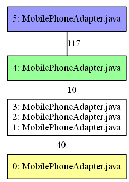

ViSiDi - a VIsualization tool for SImilarity of source code based on DIff
概要
複数アプリケーション間の類似関係を可視化することを目標としたツールです。
複数の類似するアプリケーションを読み込み、類似度が高いファイル同士について、その類似関係を可視化します。
類似関係は、ファイル間差分の合計が最小になるようなグラフとして表示されます

グラフの頂点はファイル（完全に一致するファイルはまとめてあります）、辺の重みは差分の行数です。
最終更新
2012/08/06
修論に向けて改良版製作中φ(..)
ダウンロード
ライセンス
MITライセンス
Copyright (c) 2012 Tetsuya Kanda
以下に定める条件に従い、本ソフトウェアおよび関連文書のファイル（以下「ソフトウェア」）の複製を取得するすべての人に対し、ソフトウェアを無制限に扱うことを無償で許可します。これには、ソフトウェアの複製を使用、複写、変更、結合、掲載、頒布、サブライセンス、および/または販売する権利、およびソフトウェアを提供する相手に同じことを許可する権利も無制限に含まれます。
上記の著作権表示および本許諾表示を、ソフトウェアのすべての複製または重要な部分に記載するものとします。
ソフトウェアは「現状のまま」で、明示であるか暗黙であるかを問わず、何らの保証もなく提供されます。ここでいう保証とは、商品性、特定の目的への適合性、および権利非侵害についての保証も含みますが、それに限定されるものではありません。 作者または著作権者は、契約行為、不法行為、またはそれ以外であろうと、ソフトウェアに起因または関連し、あるいはソフトウェアの使用またはその他の扱いによって生じる一切の請求、損害、その他の義務について何らの責任も負わないものとします。
ダウンロード
簡単な使い方
起動
java -jar visidi.jar -type type.conf -diff diff.exe -graph dot.exe
typeオプション
解析対象の拡張子と、コメント除去などの前処理の方法を指定したファイルを記述します。
java,J
c,D
cpp
h,H
設定ファイルの例は上記のようになります。1行ごとに、「拡張子,処理方法（1文字）」の形式で記述します。
処理方法については、ソースコード中で記述します。標準ではJava用のJ、COBOL用のCが用意されています。
指定した文字に対応する処理方法がない場合は、前処理を行いません。
処理方法を指定しない場合は、処理方法"D"（前処理なし）として扱います。
同じ処理方法が指定されていると、それらは同じ形式のファイルとして、比較が行われます。
上記では、拡張子c・cppが処理方法"D"（前処理なし）で、同じ形式として扱われます。
拡張子hは、同じく前処理なしですが処理方法を指定する文字が違うために、拡張子c・cppのファイルとの比較は行われません。
diffオプション
指定しない場合は、Java-diffライブラリを用いた計算が行われます。GNU diffを使いたい場合は、ここに実行ファイルへのパスを記述してください。
graphオプション
GraphVizのdotコマンドへのパスを指定すると、各種可視化コマンドの実行結果がpng画像になります。このオプションを指定しない場合は、dot形式のファイルのみ出力されます。
コマンド
ディレクトリの読み込み
read PATH
PATHで指定したファイルまたはディレクトリを読み込みます。PATHで指定されたファイルまたはディレクトリ以下が1つのプロジェクトとして扱われます。
ファイルのグループ化
group
group SIMILARITY
プロジェクト間でのファイルの対応をとるコマンドです。プロジェクト間で類似度の高いファイル同士を、対応するファイル同士とみなしてグループ化します。
類似度の閾値は標準で0.5ですが、指定が可能です。
グループの確認
show
show GROUP_ID
グループ化の結果を表示します。GROUP_IDを指定した場合は対応するグループに属するファイルのファイル名一覧が、
指定しない場合はグループの数が表示されます。
類似関係を可視化する
sp
sp GROUP_ID
グループ内のファイルについて、類似関係を可視化します。graphオプションが指定されていれば、コマンドを呼び出して描画までを行います。
指定されていない場合はdotファイルを書き出します。
類似関係は、ファイル間の差分の行数を辺の重みとした最小全域木です。生成されたグラフに従ってファイル間の差分を読んでいくと、読む差分の総行数が最小になります。
GROUP_IDを指定しない場合はすべてのグループに対して可視化を実行します。
グループ統計情報
pGroup
全てのグループに関して、その中に含まれるファイル数とプロジェクト数を画面出力します。
差分統計情報
pReduce
全ての最小全域木に関して、元のグループの差分の総行数と、最小全域木構築後の差分の総行数を返します。
差分表示
d FILE_ID1 FILE_ID2
ファイル間の差分を画面出力します。類似度が低いファイル同士では解析結果が保存されていないため出力されません。
解析結果を保存する
save NAME
gsave NAME SIMILARITY
ssave NAME SIMILARITY
それぞれ、類似度解析の結果、グループ化の結果、最小全域木構築の結果を保存します。
解析結果を読み込む
load NAME
gload NAME SIMILARITY
sload NAME SIMILARITY
それぞれ、類似度解析の結果、グループ化の結果、最小全域木構築の結果を読み込みます。
グループや最小全域木を読み込む場合は、先に対応する類似度解析結果を読み込んでください。
コマンド（要注意）
以下に示すコマンドは、現在のところ結果にあまり意味がありません。計算のアルゴリズムは実装してありますので、適宜変更して利用するとよいと思います。
指定したファイルからの最短経路木を構築する
sh GROUP_ID FILE_ID
指定したファイルから、他のファイルへの距離が最短になるような類似関係のグラフを構築します。
現在、距離を差分の行数にしているため、指定したファイルと他のファイルをつなぐグラフになります。
あるグループに含まれる親ディレクトリ間の類似関係を可視化する
spd GROUP_ID
グループ内のファイルの親ディレクトリ間について、類似関係を可視化します。graphオプションが指定されていれば、コマンドを呼び出して描画までを行います。
指定されていない場合はdotファイルを書き出します。
類似関係は、(1-ディレクトリ間の類似度)を辺の重みとした最小全域木です。ディレクトリ間の類似度の定義が怪しいため、実用的ではありません。